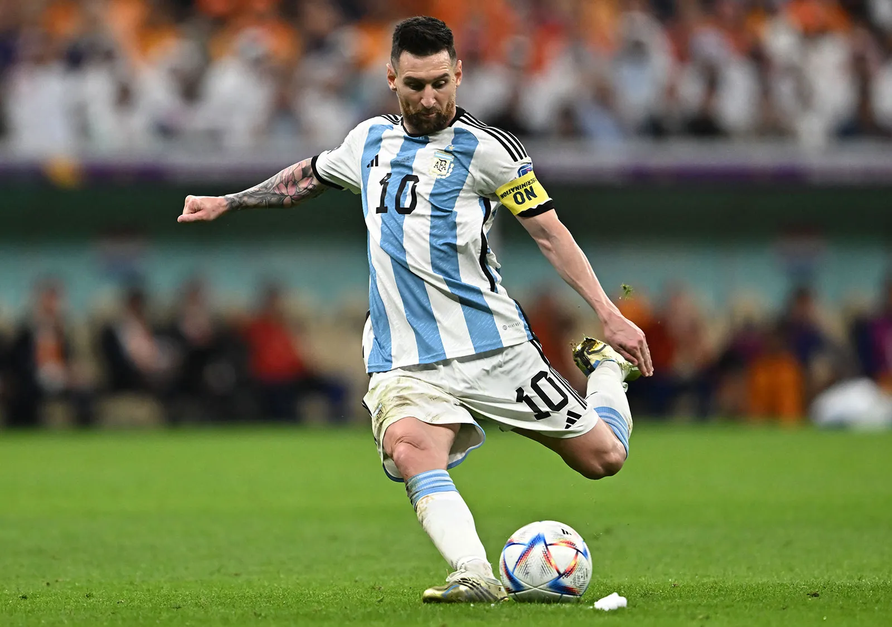

About Lionel
Lionel Andrés Messi born 24 June 1987 is an Argentine professional footballer who plays as a forward for Ligue 1 club Paris Saint-Germain and captains the Argentina national team. Widely regarded as one of the greatest players of all time, Messi has won a record seven Ballon d'Or awards, a record six European Golden Shoes, and in 2020 was named to the Ballon d'Or Dream Team.
Until leaving the club in 2021, he had spent his entire professional career with Barcelona, where he won a club-record 34 trophies, including 10 La Liga titles, seven Copa del Rey titles and four UEFA Champions Leagues. With his country, he won the 2021 Copa América and the 2022 FIFA World Cup. A prolific goalscorer and creative playmaker, Messi holds the records for most goals in La Liga, most hat-tricks in La Liga and the UEFA Champions League, and most assists in La Liga and the Copa América. He also has the most international goals by a South American male. Messi has scored over 795 senior career goals for club and country, and has the most goals by a player for a single club


Career Highlights
- Most FIFA World Player of the Year/FIFA Ballon d'Or/Best FIFA Men's Player Awards: 7 (2009–2012, 2015, 2019, 2022)
- Most official goals for a single club: 672, for Barcelona
- Most recorded assists for a single club: 268, for Barcelona
- Most goals in Finals: 34, Most Assists in Finals: 15
- Only player to have won more than one FIFA World Cup Golden Ball: 2014 and 2022
- Only player to score 40+ goals in 12 consecutive seasons
- Youngest player to play for Argentina in a FIFA World Cup: aged 18 years and 357 days in 2006
- Most Man of the Match awards won in FIFA World Cup matches: 11 (1 in 2010, 4 in 2014, 1 in 2018, 5 in 2022)
- Most Man of the Match awards won in a single FIFA World Cup: 5, in 2022 (2020)